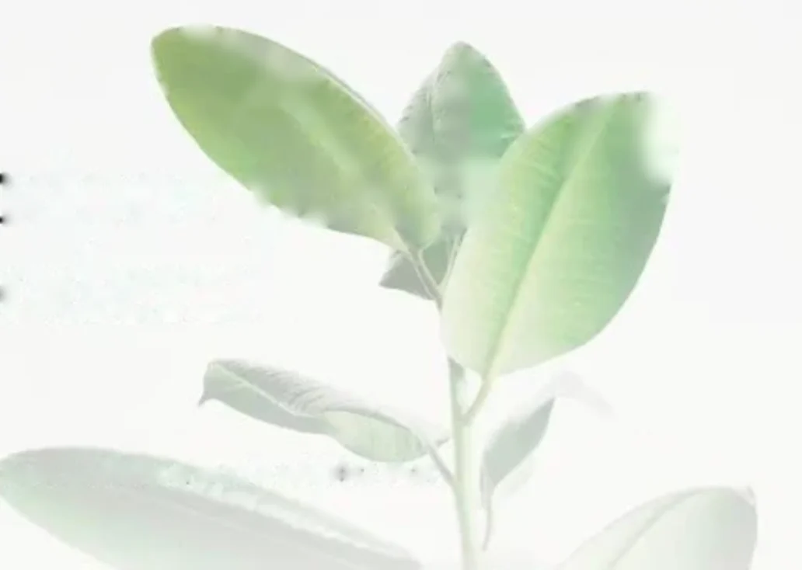
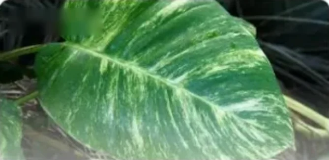
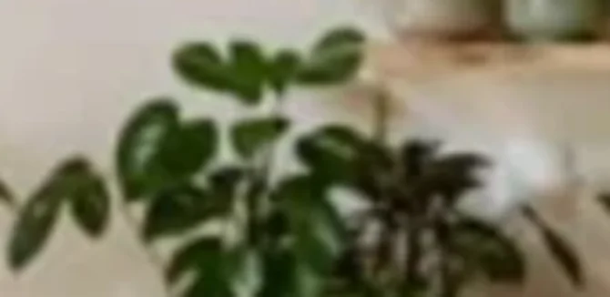
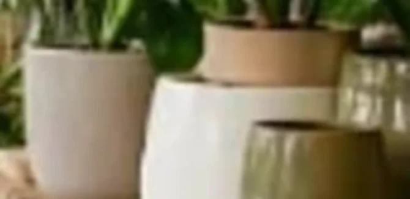
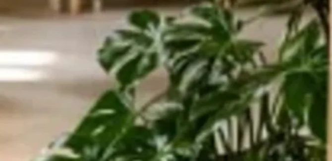

Plantes choisies, faciles à vivre
Des plantes d’intérieur pour des pièces calmes et modernes.
Des variétés choisies une à une, des conseils d’entretien clairs et une liste d’envies qui se souvient de vos coups de cœur.
Catalogue
6 plantes
-

Pothos doré 26 €
Petit
Une liane panachée et vigoureuse. Parfaite pour les étagères, les suspensions et les débuts.
RetombantePousse viteDébutant
-
Monstera deliciosa 68 €
Grande
De grandes feuilles découpées, une croissance rapide et beaucoup d’indulgence. Un classique pour la lumière vive et indirecte.
Plante phareFacileTropicale
-
Palmier de salon 46 €
Moyen
Des palmes légères qui apaisent un coin de salon ou un bureau. Se plaît à la lumière moyenne, même faible.
Animaux OKPalmierFeuillage doux
-

Philodendron 39 €
Moyen
Un feuillage dense et brillant qui pousse sans bruit. Idéal pour une pièce lumineuse sans soleil direct.
FacileFeuillage densePot en terre cuite
-

Pots en grès 24 €
Trois tailles
Tournés par des céramistes de la région, avec trou de drainage et soucoupe assortie.
ArtisanalDrainageBelgique
-

Monstera adansonii 34 €
Moyenne
Des feuilles percées et un port retombant : à suspendre près d’une fenêtre, à l’abri du soleil de midi.
RetombanteFacileGraphique
Atelier rempotage, le samedi matin
Venez avec votre plante, on s’occupe du terreau. Six places par atelier, café offert. Rue du Bailli, Ixelles.
- Mardi – vendredi11 h – 19 h
- Samedi10 h – 18 h
- Dimanche, lundiFermé